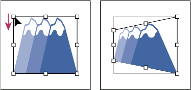

Distort objects
You can distort objects by using the Free Transform tool or a liquify tool. Use the Free Transform tool when you want to distort freely; use a liquify tool if you want to take advantage of specific preset distortions such as twirls, puckers, or wrinkles.
 Distort objects with the Free Transform tool
Distort objects with the Free Transform tool
- Select one or more objects.
- Select the Free Transform tool
 .
. - Start dragging a corner handle on the bounding box (not
a side handle), and then do one of the following:
-
Hold down Ctrl (Windows) or Command (Mac OS) until the selection is at the desired level of distortion.
-
Hold down Shift+Alt+Ctrl (Windows) or Shift+Option+Command (Mac OS) to distort in perspective.

Distorting in perspective
-